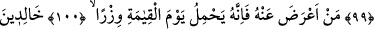

GÖZLERİ GÖMGÖK BİR HALDE
99. (Rasûlüm!) İşte böylece geçmiştekilerin haberlerinden bir kısmını sana
anlatıyoruz. Şüphesiz ki, tarafımızdan sana bir zikir verdik.
100. Kim ondan yüz çevirirse, şüphesiz ki kıyamet gününde o, ağır bir günah
yükünü yüklenecektir.
101. Bu kimseler, onda (o günah yükünün altında) ebedî kalırlar. Onlar için
kıyamet gününde bu ne kötü bir yüktür!
102. O günde Sûr’a üflenir ve biz o zaman günahkârları, gözleri (korkudan)
gömgök bir halde mahşerde toplarız.
103. Aralarında birbirlerine gizli gizli şöyle derler: “Dünyada sadece on gün
kaldınız.”
104. Aralarında konuştukları konuyu biz daha iyi biliriz. Onların en olgun ve akıllı
olanı o zaman: “Bir günden fazla kalmadınız” der.
“(Rasûlüm!) İşte böylece geçmiştekilerin haberlerinden bir kısmını sana
anlatıyoruz.” Bu haberden maksad Hz. Mûsâ’nın kıssasıdır. “
” büyük faydası olan,
kendisiyle bir ilim veya zann-ı gâlib hâsıl olan haberdir. Aslında bu üç özelliği
taşımadıkça habere “en-nebe’ ” denilmez. Kendisinde “nebe’ ” özelliği bulunan haber
tevâtür gibi, Allah Teâlâ’nın ve Nebî (a.s.)’ın verdiği haberler gibi yalandan uzak
olması şarttır.
Buna göre âyetin mânâsı şöyledir: Ey Muhammed, işte bu işittiğin güzel kıssa gibi
geçmiş ümmetler zamanında cereyân eden bâzı hadiseleri sana hikâye ediyoruz. Sana
ibret olsun, ilmin artsın, mûcizelerin çoğalsın ve ümmetinden basiret sahibi olanlara
ders olsun diye eksiltmeden bu kıssaları naklediyoruz. Burada, geçmiş ümmetlerin
haberlerinin yine indirileceğine dâir bir vaad vardır.
Böylece Mûsâ kıssasını sana anlattığımız gibi elbette geçmiş haberlerden, anlatırız;
yâni geçmiş işlerden ve asırlardan sana haber veririz ki senin peygamberliğin için